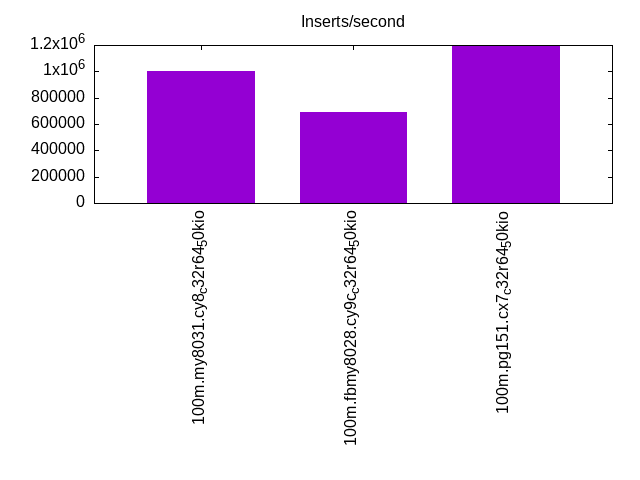
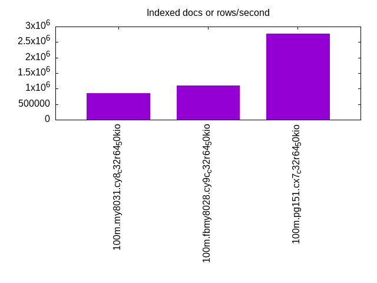
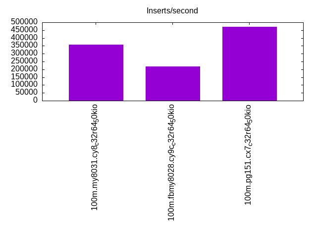
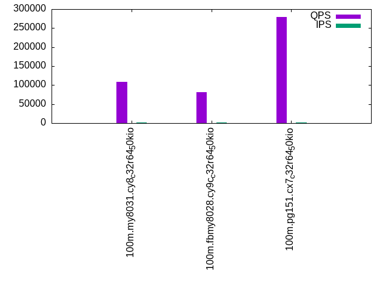
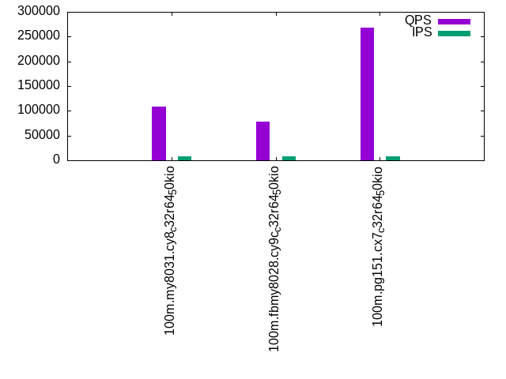
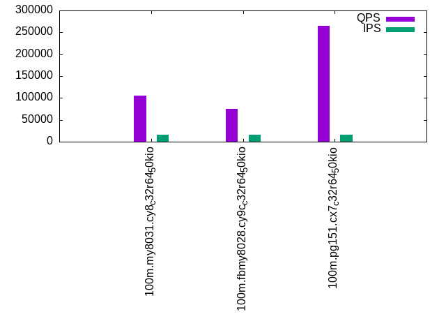

This is a report for the insert benchmark with 100M docs and 16 client(s). It is generated by scripts (bash, awk, sed) and Tufte might not be impressed. An overview of the insert benchmark is here and a short update is here. Below, by DBMS, I mean DBMS+version.config. An example is my8020.c10b40 where my means MySQL, 8020 is version 8.0.20 and c10b40 is the name for the configuration file.
The test server is an c7g.8xl with 32 cores, 64G RAM and io2 storage (2T, 50K IOPs). The benchmark was run with 16 clients and there was 1 or 2 connections per client (1 for queries, 1 for inserts). The benchmark loads 75M rows without secondary indexes, creates secondary indexes, loads another 25M rows then does 3 read+write tests for one hour each that do queries as fast as possible with 100, 500 and then 1000 writes/second/client concurrent with the queries. The database is cached by the storage engine and the only IO is for writes. Clients and the DBMS share one server. The per-database configs are in the per-database subdirectories here.
The tested DBMS are:
The numbers are inserts/s for l.i0 and l.i1, indexed docs (or rows) /s for l.x and queries/s for q*.2. The values are the average rate over the entire test for inserts (IPS) and queries (QPS). The range of values for IPS and QPS is split into 3 parts: bottom 25%, middle 50%, top 25%. Values in the bottom 25% have a red background, values in the top 25% have a green background and values in the middle have no color. A gray background is used for values that can be ignored because the DBMS did not sustain the target insert rate. Red backgrounds are not used when the minimum value is within 80% of the max value.
| dbms | l.i0 | l.x | l.i1 | q100.1 | q500.1 | q1000.1 |
|---|---|---|---|---|---|---|
| 100m.my8031.cy8_c32r64_50kio | 1000000 | 863218 | 357143 | 108094 | 108081 | 104663 |
| 100m.fbmy8028.cy9c_c32r64_50kio | 694444 | 1104412 | 217391 | 80945 | 78663 | 75623 |
| 100m.pg151.cx7_c32r64_50kio | 1190476 | 2781481 | 471698 | 279838 | 267888 | 264360 |
This lists the average rate of inserts/s for the tests that do inserts concurrent with queries. For such tests the query rate is listed in the table above. The read+write tests are setup so that the insert rate should match the target rate every second. Cells that are not at least 95% of the target have a red background to indicate a failure to satisfy the target.
| dbms | q100.1 | q500.1 | q1000.1 |
|---|---|---|---|
| my8031.cy8_c32r64_50kio | 1592 | 7960 | 15916 |
| fbmy8028.cy9c_c32r64_50kio | 1592 | 7958 | 15916 |
| pg151.cx7_c32r64_50kio | 1592 | 7958 | 15916 |
| target | 1600 | 8000 | 16000 |
l.i0: load without secondary indexes. Graphs for performance per 1-second interval are here.
Average throughput:
Insert response time histogram: each cell has the percentage of responses that take <= the time in the header and max is the max response time in seconds. For the max column values in the top 25% of the range have a red background and in the bottom 25% of the range have a green background. The red background is not used when the min value is within 80% of the max value.
| dbms | 256us | 1ms | 4ms | 16ms | 64ms | 256ms | 1s | 4s | 16s | gt | max |
|---|---|---|---|---|---|---|---|---|---|---|---|
| my8031.cy8_c32r64_50kio | 43.271 | 56.511 | 0.166 | 0.023 | 0.030 | 0.095 | |||||
| fbmy8028.cy9c_c32r64_50kio | 6.854 | 92.974 | 0.120 | 0.052 | 0.050 | ||||||
| pg151.cx7_c32r64_50kio | 97.576 | 2.363 | 0.059 | 0.002 | 0.016 |
Performance metrics for the DBMS listed above. Some are normalized by throughput, others are not. Legend for results is here.
ips qps rps rmbps wps wmbps rpq rkbpq wpi wkbpi csps cpups cspq cpupq dbgb1 dbgb2 rss maxop p50 p99 tag 1000000 0 0 0.0 1456.5 255.5 0.000 0.000 0.001 0.262 140367 50.5 0.140 16 5.1 101.6 9.4 0.095 92727 58537 100m.my8031.cy8_c32r64_50kio 694444 0 0 0.0 1036.0 236.9 0.000 0.000 0.001 0.349 96044 49.3 0.138 23 2.9 3.6 1.5 0.050 56876 47565 100m.fbmy8028.cy9c_c32r64_50kio 1190476 0 0 0.0 2232.4 518.2 0.000 0.000 0.002 0.446 135763 49.6 0.114 13 7.2 19.4 6.8 0.016 132857 114411 100m.pg151.cx7_c32r64_50kio
l.x: create secondary indexes.
Average throughput:
Performance metrics for the DBMS listed above. Some are normalized by throughput, others are not. Legend for results is here.
ips qps rps rmbps wps wmbps rpq rkbpq wpi wkbpi csps cpups cspq cpupq dbgb1 dbgb2 rss maxop p50 p99 tag 863218 0 4855 311.8 16848.3 797.7 0.006 0.370 0.020 0.946 91477 22.8 0.106 8 11.1 107.7 13.0 0.002 NA NA 100m.my8031.cy8_c32r64_50kio 1104412 0 3 0.2 1032.6 234.3 0.000 0.000 0.001 0.217 8389 40.9 0.008 12 5.1 5.8 8.5 0.002 NA NA 100m.fbmy8028.cy9c_c32r64_50kio 2781481 0 0 0.0 3089.1 749.2 0.000 0.000 0.001 0.276 40968 23.0 0.015 3 13.8 32.1 0.0 0.021 NA NA 100m.pg151.cx7_c32r64_50kio
l.i1: continue load after secondary indexes created. Graphs for performance per 1-second interval are here.
Average throughput:
Insert response time histogram: each cell has the percentage of responses that take <= the time in the header and max is the max response time in seconds. For the max column values in the top 25% of the range have a red background and in the bottom 25% of the range have a green background. The red background is not used when the min value is within 80% of the max value.
| dbms | 256us | 1ms | 4ms | 16ms | 64ms | 256ms | 1s | 4s | 16s | gt | max |
|---|---|---|---|---|---|---|---|---|---|---|---|
| my8031.cy8_c32r64_50kio | 99.049 | 0.509 | 0.290 | 0.152 | 0.168 | ||||||
| fbmy8028.cy9c_c32r64_50kio | 1.308 | 86.636 | 12.026 | 0.030 | 0.048 | ||||||
| pg151.cx7_c32r64_50kio | 13.240 | 86.575 | 0.182 | 0.003 | 0.018 |
Performance metrics for the DBMS listed above. Some are normalized by throughput, others are not. Legend for results is here.
ips qps rps rmbps wps wmbps rpq rkbpq wpi wkbpi csps cpups cspq cpupq dbgb1 dbgb2 rss maxop p50 p99 tag 357143 0 4871 76.1 2362.6 314.5 0.014 0.218 0.007 0.902 139690 44.1 0.391 40 19.0 115.5 21.7 0.168 32565 450 100m.my8031.cy8_c32r64_50kio 217391 0 147 18.2 982.4 227.8 0.001 0.086 0.005 1.073 82149 30.5 0.378 45 12.3 14.3 9.4 0.048 14484 6393 100m.fbmy8028.cy9c_c32r64_50kio 471698 0 0 0.0 2751.9 635.1 0.000 0.000 0.006 1.379 129994 45.8 0.276 31 22.8 53.1 0.0 0.018 41355 16082 100m.pg151.cx7_c32r64_50kio
q100.1: range queries with 100 insert/s per client. Graphs for performance per 1-second interval are here.
Average throughput:
Query response time histogram: each cell has the percentage of responses that take <= the time in the header and max is the max response time in seconds. For max values in the top 25% of the range have a red background and in the bottom 25% of the range have a green background. The red background is not used when the min value is within 80% of the max value.
| dbms | 256us | 1ms | 4ms | 16ms | 64ms | 256ms | 1s | 4s | 16s | gt | max |
|---|---|---|---|---|---|---|---|---|---|---|---|
| my8031.cy8_c32r64_50kio | 99.938 | 0.060 | 0.002 | nonzero | 0.010 | ||||||
| fbmy8028.cy9c_c32r64_50kio | 99.826 | 0.173 | 0.001 | nonzero | nonzero | 0.033 | |||||
| pg151.cx7_c32r64_50kio | 99.996 | 0.003 | 0.001 | nonzero | 0.014 |
Insert response time histogram: each cell has the percentage of responses that take <= the time in the header and max is the max response time in seconds. For max values in the top 25% of the range have a red background and in the bottom 25% of the range have a green background. The red background is not used when the min value is within 80% of the max value.
| dbms | 256us | 1ms | 4ms | 16ms | 64ms | 256ms | 1s | 4s | 16s | gt | max |
|---|---|---|---|---|---|---|---|---|---|---|---|
| my8031.cy8_c32r64_50kio | 99.840 | 0.160 | 0.009 | ||||||||
| fbmy8028.cy9c_c32r64_50kio | 2.520 | 97.438 | 0.042 | 0.008 | |||||||
| pg151.cx7_c32r64_50kio | 99.159 | 0.830 | 0.011 | 0.017 |
Performance metrics for the DBMS listed above. Some are normalized by throughput, others are not. Legend for results is here.
ips qps rps rmbps wps wmbps rpq rkbpq wpi wkbpi csps cpups cspq cpupq dbgb1 dbgb2 rss maxop p50 p99 tag 1592 108094 0 0.0 289.7 8.4 0.000 0.000 0.182 5.431 415157 51.3 3.841 152 19.3 115.9 22.0 0.010 6793 6553 100m.my8031.cy8_c32r64_50kio 1592 80945 22 0.2 22.7 4.9 0.000 0.002 0.014 3.123 310306 51.3 3.834 203 7.4 8.1 24.8 0.033 5166 4747 100m.fbmy8028.cy9c_c32r64_50kio 1592 279838 0 0.0 1318.1 41.9 0.000 0.000 0.828 26.938 1068784 50.4 3.819 58 23.4 52.0 0.0 0.014 17276 16606 100m.pg151.cx7_c32r64_50kio
q500.1: range queries with 500 insert/s per client. Graphs for performance per 1-second interval are here.
Average throughput:
Query response time histogram: each cell has the percentage of responses that take <= the time in the header and max is the max response time in seconds. For max values in the top 25% of the range have a red background and in the bottom 25% of the range have a green background. The red background is not used when the min value is within 80% of the max value.
| dbms | 256us | 1ms | 4ms | 16ms | 64ms | 256ms | 1s | 4s | 16s | gt | max |
|---|---|---|---|---|---|---|---|---|---|---|---|
| my8031.cy8_c32r64_50kio | 99.786 | 0.199 | 0.015 | nonzero | 0.016 | ||||||
| fbmy8028.cy9c_c32r64_50kio | 99.098 | 0.888 | 0.013 | nonzero | nonzero | 0.033 | |||||
| pg151.cx7_c32r64_50kio | 99.977 | 0.015 | 0.008 | nonzero | 0.014 |
Insert response time histogram: each cell has the percentage of responses that take <= the time in the header and max is the max response time in seconds. For max values in the top 25% of the range have a red background and in the bottom 25% of the range have a green background. The red background is not used when the min value is within 80% of the max value.
| dbms | 256us | 1ms | 4ms | 16ms | 64ms | 256ms | 1s | 4s | 16s | gt | max |
|---|---|---|---|---|---|---|---|---|---|---|---|
| my8031.cy8_c32r64_50kio | 99.024 | 0.976 | 0.015 | ||||||||
| fbmy8028.cy9c_c32r64_50kio | 0.792 | 94.246 | 4.962 | nonzero | 0.016 | ||||||
| pg151.cx7_c32r64_50kio | 0.093 | 89.726 | 10.088 | 0.093 | 0.030 |
Performance metrics for the DBMS listed above. Some are normalized by throughput, others are not. Legend for results is here.
ips qps rps rmbps wps wmbps rpq rkbpq wpi wkbpi csps cpups cspq cpupq dbgb1 dbgb2 rss maxop p50 p99 tag 7960 108081 0 0.0 262.4 10.1 0.000 0.000 0.033 1.299 416048 51.7 3.849 153 21.4 118.0 24.1 0.016 6831 6587 100m.my8031.cy8_c32r64_50kio 7958 78663 0 0.0 66.6 15.2 0.000 0.000 0.008 1.958 303689 52.3 3.861 213 9.5 9.8 43.0 0.033 4923 4523 100m.fbmy8028.cy9c_c32r64_50kio 7958 267888 0 0.0 1048.2 75.7 0.000 0.000 0.132 9.742 1025813 51.1 3.829 61 26.3 49.5 0.0 0.014 16766 15359 100m.pg151.cx7_c32r64_50kio
q1000.1: range queries with 1000 insert/s per client. Graphs for performance per 1-second interval are here.
Average throughput:
Query response time histogram: each cell has the percentage of responses that take <= the time in the header and max is the max response time in seconds. For max values in the top 25% of the range have a red background and in the bottom 25% of the range have a green background. The red background is not used when the min value is within 80% of the max value.
| dbms | 256us | 1ms | 4ms | 16ms | 64ms | 256ms | 1s | 4s | 16s | gt | max |
|---|---|---|---|---|---|---|---|---|---|---|---|
| my8031.cy8_c32r64_50kio | 99.552 | 0.428 | 0.020 | nonzero | nonzero | 0.023 | |||||
| fbmy8028.cy9c_c32r64_50kio | 97.489 | 2.479 | 0.032 | nonzero | nonzero | 0.035 | |||||
| pg151.cx7_c32r64_50kio | 99.936 | 0.047 | 0.017 | 0.001 | nonzero | 0.021 |
Insert response time histogram: each cell has the percentage of responses that take <= the time in the header and max is the max response time in seconds. For max values in the top 25% of the range have a red background and in the bottom 25% of the range have a green background. The red background is not used when the min value is within 80% of the max value.
| dbms | 256us | 1ms | 4ms | 16ms | 64ms | 256ms | 1s | 4s | 16s | gt | max |
|---|---|---|---|---|---|---|---|---|---|---|---|
| my8031.cy8_c32r64_50kio | 99.142 | 0.857 | 0.001 | 0.020 | |||||||
| fbmy8028.cy9c_c32r64_50kio | 0.277 | 64.877 | 34.831 | 0.014 | 0.022 | ||||||
| pg151.cx7_c32r64_50kio | 0.001 | 89.530 | 10.101 | 0.368 | 0.040 |
Performance metrics for the DBMS listed above. Some are normalized by throughput, others are not. Legend for results is here.
ips qps rps rmbps wps wmbps rpq rkbpq wpi wkbpi csps cpups cspq cpupq dbgb1 dbgb2 rss maxop p50 p99 tag 15916 104663 0 0.0 801.5 32.5 0.000 0.000 0.050 2.092 407211 52.7 3.891 161 37.6 134.1 38.5 0.023 6441 6201 100m.my8031.cy8_c32r64_50kio 15916 75623 11 1.3 137.5 31.3 0.000 0.018 0.009 2.012 294820 53.8 3.899 228 13.5 15.2 49.5 0.035 4779 4411 100m.fbmy8028.cy9c_c32r64_50kio 15916 264360 0 0.0 1197.9 118.1 0.000 0.000 0.075 7.595 1013507 51.7 3.834 63 44.4 77.8 0.0 0.021 16462 14752 100m.pg151.cx7_c32r64_50kio
l.i0: load without secondary indexes
Performance metrics for all DBMS, not just the ones listed above. Some are normalized by throughput, others are not. Legend for results is here.
ips qps rps rmbps wps wmbps rpq rkbpq wpi wkbpi csps cpups cspq cpupq dbgb1 dbgb2 rss maxop p50 p99 tag 1000000 0 0 0.0 1456.5 255.5 0.000 0.000 0.001 0.262 140367 50.5 0.140 16 5.1 101.6 9.4 0.095 92727 58537 100m.my8031.cy8_c32r64_50kio 694444 0 0 0.0 1036.0 236.9 0.000 0.000 0.001 0.349 96044 49.3 0.138 23 2.9 3.6 1.5 0.050 56876 47565 100m.fbmy8028.cy9c_c32r64_50kio 1190476 0 0 0.0 2232.4 518.2 0.000 0.000 0.002 0.446 135763 49.6 0.114 13 7.2 19.4 6.8 0.016 132857 114411 100m.pg151.cx7_c32r64_50kio
l.x: create secondary indexes
Performance metrics for all DBMS, not just the ones listed above. Some are normalized by throughput, others are not. Legend for results is here.
ips qps rps rmbps wps wmbps rpq rkbpq wpi wkbpi csps cpups cspq cpupq dbgb1 dbgb2 rss maxop p50 p99 tag 863218 0 4855 311.8 16848.3 797.7 0.006 0.370 0.020 0.946 91477 22.8 0.106 8 11.1 107.7 13.0 0.002 NA NA 100m.my8031.cy8_c32r64_50kio 1104412 0 3 0.2 1032.6 234.3 0.000 0.000 0.001 0.217 8389 40.9 0.008 12 5.1 5.8 8.5 0.002 NA NA 100m.fbmy8028.cy9c_c32r64_50kio 2781481 0 0 0.0 3089.1 749.2 0.000 0.000 0.001 0.276 40968 23.0 0.015 3 13.8 32.1 0.0 0.021 NA NA 100m.pg151.cx7_c32r64_50kio
l.i1: continue load after secondary indexes created
Performance metrics for all DBMS, not just the ones listed above. Some are normalized by throughput, others are not. Legend for results is here.
ips qps rps rmbps wps wmbps rpq rkbpq wpi wkbpi csps cpups cspq cpupq dbgb1 dbgb2 rss maxop p50 p99 tag 357143 0 4871 76.1 2362.6 314.5 0.014 0.218 0.007 0.902 139690 44.1 0.391 40 19.0 115.5 21.7 0.168 32565 450 100m.my8031.cy8_c32r64_50kio 217391 0 147 18.2 982.4 227.8 0.001 0.086 0.005 1.073 82149 30.5 0.378 45 12.3 14.3 9.4 0.048 14484 6393 100m.fbmy8028.cy9c_c32r64_50kio 471698 0 0 0.0 2751.9 635.1 0.000 0.000 0.006 1.379 129994 45.8 0.276 31 22.8 53.1 0.0 0.018 41355 16082 100m.pg151.cx7_c32r64_50kio
q100.1: range queries with 100 insert/s per client
Performance metrics for all DBMS, not just the ones listed above. Some are normalized by throughput, others are not. Legend for results is here.
ips qps rps rmbps wps wmbps rpq rkbpq wpi wkbpi csps cpups cspq cpupq dbgb1 dbgb2 rss maxop p50 p99 tag 1592 108094 0 0.0 289.7 8.4 0.000 0.000 0.182 5.431 415157 51.3 3.841 152 19.3 115.9 22.0 0.010 6793 6553 100m.my8031.cy8_c32r64_50kio 1592 80945 22 0.2 22.7 4.9 0.000 0.002 0.014 3.123 310306 51.3 3.834 203 7.4 8.1 24.8 0.033 5166 4747 100m.fbmy8028.cy9c_c32r64_50kio 1592 279838 0 0.0 1318.1 41.9 0.000 0.000 0.828 26.938 1068784 50.4 3.819 58 23.4 52.0 0.0 0.014 17276 16606 100m.pg151.cx7_c32r64_50kio
q500.1: range queries with 500 insert/s per client
Performance metrics for all DBMS, not just the ones listed above. Some are normalized by throughput, others are not. Legend for results is here.
ips qps rps rmbps wps wmbps rpq rkbpq wpi wkbpi csps cpups cspq cpupq dbgb1 dbgb2 rss maxop p50 p99 tag 7960 108081 0 0.0 262.4 10.1 0.000 0.000 0.033 1.299 416048 51.7 3.849 153 21.4 118.0 24.1 0.016 6831 6587 100m.my8031.cy8_c32r64_50kio 7958 78663 0 0.0 66.6 15.2 0.000 0.000 0.008 1.958 303689 52.3 3.861 213 9.5 9.8 43.0 0.033 4923 4523 100m.fbmy8028.cy9c_c32r64_50kio 7958 267888 0 0.0 1048.2 75.7 0.000 0.000 0.132 9.742 1025813 51.1 3.829 61 26.3 49.5 0.0 0.014 16766 15359 100m.pg151.cx7_c32r64_50kio
q1000.1: range queries with 1000 insert/s per client
Performance metrics for all DBMS, not just the ones listed above. Some are normalized by throughput, others are not. Legend for results is here.
ips qps rps rmbps wps wmbps rpq rkbpq wpi wkbpi csps cpups cspq cpupq dbgb1 dbgb2 rss maxop p50 p99 tag 15916 104663 0 0.0 801.5 32.5 0.000 0.000 0.050 2.092 407211 52.7 3.891 161 37.6 134.1 38.5 0.023 6441 6201 100m.my8031.cy8_c32r64_50kio 15916 75623 11 1.3 137.5 31.3 0.000 0.018 0.009 2.012 294820 53.8 3.899 228 13.5 15.2 49.5 0.035 4779 4411 100m.fbmy8028.cy9c_c32r64_50kio 15916 264360 0 0.0 1197.9 118.1 0.000 0.000 0.075 7.595 1013507 51.7 3.834 63 44.4 77.8 0.0 0.021 16462 14752 100m.pg151.cx7_c32r64_50kio
Insert response time histogram
256us 1ms 4ms 16ms 64ms 256ms 1s 4s 16s gt max tag 0.000 43.271 56.511 0.166 0.023 0.030 0.000 0.000 0.000 0.000 0.095 my8031.cy8_c32r64_50kio 0.000 6.854 92.974 0.120 0.052 0.000 0.000 0.000 0.000 0.000 0.050 fbmy8028.cy9c_c32r64_50kio 0.000 97.576 2.363 0.059 0.002 0.000 0.000 0.000 0.000 0.000 0.016 pg151.cx7_c32r64_50kio
TODO - determine whether there is data for create index response time
Insert response time histogram
256us 1ms 4ms 16ms 64ms 256ms 1s 4s 16s gt max tag 0.000 0.000 99.049 0.509 0.290 0.152 0.000 0.000 0.000 0.000 0.168 my8031.cy8_c32r64_50kio 0.000 1.308 86.636 12.026 0.030 0.000 0.000 0.000 0.000 0.000 0.048 fbmy8028.cy9c_c32r64_50kio 0.000 13.240 86.575 0.182 0.003 0.000 0.000 0.000 0.000 0.000 0.018 pg151.cx7_c32r64_50kio
Query response time histogram
256us 1ms 4ms 16ms 64ms 256ms 1s 4s 16s gt max tag 99.938 0.060 0.002 nonzero 0.000 0.000 0.000 0.000 0.000 0.000 0.010 my8031.cy8_c32r64_50kio 99.826 0.173 0.001 nonzero nonzero 0.000 0.000 0.000 0.000 0.000 0.033 fbmy8028.cy9c_c32r64_50kio 99.996 0.003 0.001 nonzero 0.000 0.000 0.000 0.000 0.000 0.000 0.014 pg151.cx7_c32r64_50kio
Insert response time histogram
256us 1ms 4ms 16ms 64ms 256ms 1s 4s 16s gt max tag 0.000 0.000 99.840 0.160 0.000 0.000 0.000 0.000 0.000 0.000 0.009 my8031.cy8_c32r64_50kio 0.000 2.520 97.438 0.042 0.000 0.000 0.000 0.000 0.000 0.000 0.008 fbmy8028.cy9c_c32r64_50kio 0.000 0.000 99.159 0.830 0.011 0.000 0.000 0.000 0.000 0.000 0.017 pg151.cx7_c32r64_50kio
Query response time histogram
256us 1ms 4ms 16ms 64ms 256ms 1s 4s 16s gt max tag 99.786 0.199 0.015 nonzero 0.000 0.000 0.000 0.000 0.000 0.000 0.016 my8031.cy8_c32r64_50kio 99.098 0.888 0.013 nonzero nonzero 0.000 0.000 0.000 0.000 0.000 0.033 fbmy8028.cy9c_c32r64_50kio 99.977 0.015 0.008 nonzero 0.000 0.000 0.000 0.000 0.000 0.000 0.014 pg151.cx7_c32r64_50kio
Insert response time histogram
256us 1ms 4ms 16ms 64ms 256ms 1s 4s 16s gt max tag 0.000 0.000 99.024 0.976 0.000 0.000 0.000 0.000 0.000 0.000 0.015 my8031.cy8_c32r64_50kio 0.000 0.792 94.246 4.962 nonzero 0.000 0.000 0.000 0.000 0.000 0.016 fbmy8028.cy9c_c32r64_50kio 0.000 0.093 89.726 10.088 0.093 0.000 0.000 0.000 0.000 0.000 0.030 pg151.cx7_c32r64_50kio
Query response time histogram
256us 1ms 4ms 16ms 64ms 256ms 1s 4s 16s gt max tag 99.552 0.428 0.020 nonzero nonzero 0.000 0.000 0.000 0.000 0.000 0.023 my8031.cy8_c32r64_50kio 97.489 2.479 0.032 nonzero nonzero 0.000 0.000 0.000 0.000 0.000 0.035 fbmy8028.cy9c_c32r64_50kio 99.936 0.047 0.017 0.001 nonzero 0.000 0.000 0.000 0.000 0.000 0.021 pg151.cx7_c32r64_50kio
Insert response time histogram
256us 1ms 4ms 16ms 64ms 256ms 1s 4s 16s gt max tag 0.000 0.000 99.142 0.857 0.001 0.000 0.000 0.000 0.000 0.000 0.020 my8031.cy8_c32r64_50kio 0.000 0.277 64.877 34.831 0.014 0.000 0.000 0.000 0.000 0.000 0.022 fbmy8028.cy9c_c32r64_50kio 0.000 0.001 89.530 10.101 0.368 0.000 0.000 0.000 0.000 0.000 0.040 pg151.cx7_c32r64_50kio